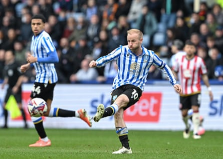
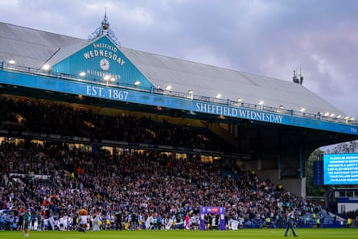
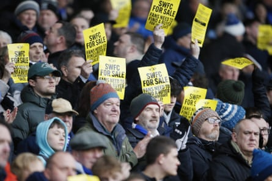

S heffield Wednesday have been testing the patience of the EFL and their fans since the controversial sale of Hillsborough to the owner, Dejphon Chansiri, seven years ago, but even so the escalation of the club’s crisis from alarming to existential has happened at some speed.
After years of somehow coping with transfer embargoes, points deductions, missed tax bills and the late payment of players, Chansiri’s turbulent ownership appears to be reaching the point of no return.
Wednesday were last week banned by the EFL from spending money on transfers until January 2027 for exceeding “30 days of late payments” to players in the previous 12 months and, the league clarified on Friday, for another missed payment to HMRC. The club, who have appealed against that penalty, will be in danger of having no players if they fail to pay June’s wages on Monday’s due date.
Under Fifa regulations players would be entitled to give notice of their intent to terminate their contracts. The regulations state: “In the case of a club unlawfully failing to pay a player at least two monthly salaries on their due dates, the player will be deemed to have a just cause to terminate his contract, provided that he has put the debtor club in default in writing and has granted a deadline of at least 15 days for the debtor club to fully comply with its financial obligation(s). Alternative provisions in contracts existing at the time of this provision coming into force may be considered.”
Wednesday are understood to have belatedly paid some players last month’s wages – payments for March were also late – but not all of Danny Röhl’s squad have received their salaries. A club source said May’s salary payments had been targeted, with Chansiri making sure the younger players and those under contract were paid in order to protect their resale value, whereas older squad members approaching the end of their contracts were not.
The captain, Barry Bannan, the striker Callum Paterson and the defender Akin Famewo are out of contract next week after rejecting new deals offered last month, and it is unclear whether they have been paid. After contemplating a no-show Bannan is understood to have reported for duty as instructed on the first day of pre-season training on Thursday, but Paterson and Famewo did not turn up.
Barry Bannan, Sheffield Wednesday’s captain, turned up for pre-season training despite being out of contract next week.Photograph: Cody Froggatt/PA
All of Röhl’s coaching staff are also out of contract next week and the manager, despite having two years on a contract that includes a seven-figure release clause, is expected to depart sooner rather than later. The German was interviewed by Southampton before they appointed Will Still last month, and is admired by Leicester, who have parted company with Ruud van Nistelrooy. Röhl may choose to leave Hillsborough even without a job to go to.
Wednesday do not have pre-season fixtures arranged beyond an under-21s game against Frickley Athletic, and planned renovations to their training ground, including the installation of two new pitches, have not been completed. Hillsborough is in need of a major overhaul, with the infrastructure of the 126-year-old ground so poor that the boiler was unable to generate sufficient hot water for the players to shower in comfort at various points last season.
Chansiri is believed to have acknowledged the gravity of the situation, and is willing to engage in serious talks regarding a sale. For years his family have funded multimillion-pound losses at Wednesday from the profits of their seafood business, Thai Union Group – total losses over his 10-year stewardship are more than £150m – but no longer appear willing to subsidise the club. TUG remains the world’s biggest suppliers of canned tuna but its stock value has halved over the past decade, with the value of Chansiri’s stake dropping from £18m to £9m. The family’s overall stake is worth about 20 times that amount.
Sheffield Wednesday’s 126-year-old ground has seen much better days.Photograph: Malcolm Bryce/ProSports/Shutterstock
Wednesday are attracting potential buyers, with two US consortiums understood to be particularly interested, but none have got anywhere near what they regard as Chansiri’s outlandish valuation. Towards the end of last year the 57-year-old was telling brokers that Wednesday were worth twice as much as Sheffield United, who were being bought for £111m, and although his asking price has dropped it remains far too high for the would-be buyers.
An independent analyst who has studied Wednesday’s accounts said an enterprise value of about £40m was realistic given the club do not own Hillsborough, and that the amount could be doubled if the ground were part of a deal. The stadium is owned by a company called Sheffield 3 Limited, which is controlled by Chansiri.
Wednesday’s attempt to include the £60m stadium sale in their 2017-18 accounts for the purpose of profitability and sustainability regulations, even though it did not take place until the following season, led to their being docked six points by the EFL (reduced from 12 on appeal).
Dejphon Chansiri’s rare public statement will have done little to reassure supporters.Photograph: Paul Thompson/ProSports/Shutterstock
Chansiri is conducting sale negotiations, often from Bangkok. Wednesday are woefully understaffed at management level, with no chief executive or sporting director, leaving the club secretary, Lindsey Hinton, to put out the fires locally.
Chansiri issued a rare public statement on Thursday, saying a potential sale with an American group had collapsed after the buyer failed to pay a £5m deposit, but it will have done little to reassure supporters.
“I take full responsibility for being unable to fulfil my current obligations,” Chansiri said. “But a further obligation I have is to ensure that if the club is sold, it is sold to the right people with the right credentials, who can sustain Sheffield Wednesday and take the club forward.”